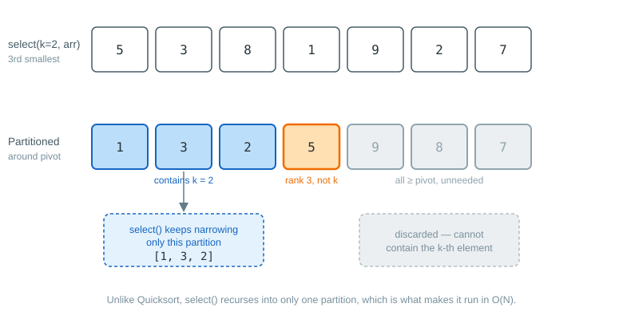

Selection and median
Selection answers a narrower question than sorting: given an array of N elements, what is the k-th
smallest element (k from 0, the smallest, to N-1, the largest)? Computing it does not require the
whole array to be ordered, so Sorter.select and Sorter.median are implemented independently of
the concrete sorting algorithms (StraightInsertionSorter, ShellSorter, QuicksortSorter,
HeapsortSorter, SystemSorter); every Sorter inherits the same select and median logic from
the abstract Sorter base class.
Selecting the k-th smallest element
select uses the same partitioning idea as Quicksort: a partitioning element
is chosen as the median of the first, middle and last elements of the active range, and the array is
rearranged so that smaller elements end up to its left and larger elements to its right. Unlike
Quicksort, selection does not need to keep a stack of pending sub-arrays, because after each
partitioning step only the sub-array known to contain the k-th element needs to be considered
further; the other one can be discarded. This makes select run in expected O(N) time, rather than
O(N log N) for a full sort.
select rearranges the input array as a side effect: after it returns, array[k] holds the
selected value, every element before it is smaller (in arbitrary order), and every element after it
is greater (also in arbitrary order). Make a copy of the array first if it must remain unmodified,
or if select will be called several times with different values of k on the same logical data.
The diagram below calls select(2, arr) on the same array and pivot used in the
Quicksort example, {5, 3, 8, 1, 9, 2, 7}. Partitioning is identical to
Quicksort, but once the pivot’s final position is known, select keeps narrowing only the
partition that can contain the k-th element and discards the other one outright, which is what
gives it expected O(N) running time instead of O(N log N).

Sorter<Double> sorter = Sorter.create();
double[] values = {5.0, 3.0, 8.0, 1.0, 9.0};
double thirdSmallest = sorter.select(2, values);
// values is now rearranged around index 2Generic types are selected the same way, using either Comparable or an explicit Comparator:
Sorter<String> sorter = Sorter.create();
String[] words = {"banana", "apple", "cherry", "date"};
String secondSmallest = sorter.select(1, words); // uses natural (Comparable) orderComputing the median
median computes the middle element of an array using select. For an array of odd length N,
the median is simply the element at position k = N / 2. For even N, it is the average of the
elements at positions N / 2 - 1 and N / 2; median obtains the first one through select and
finds the second with a linear scan over the smaller partition that select leaves behind, so no
second call to select is needed.
Sorter<Double> sorter = Sorter.create();
double[] values = {5.0, 3.0, 8.0, 1.0, 9.0, 2.0};
double median = sorter.median(values);Averaging two elements of a primitive type is straightforward (0.5 * (a + b)), but generic types
need to be told how to average. median accepts either elements implementing
ComparableAndAverageable, or an explicit ComparatorAndAverager that both orders and averages
elements:
import com.irurueta.sorting.ComparatorAndAverager;
Sorter<Double> sorter = Sorter.create();
ComparatorAndAverager<Double> comparatorAndAverager = new ComparatorAndAverager<>() {
@Override
public int compare(final Double a, final Double b) {
return a.compareTo(b);
}
@Override
public Double average(final Double a, final Double b) {
return 0.5 * (a + b);
}
};
Double[] values = {5.0, 3.0, 8.0, 1.0, 9.0, 2.0};
double median = sorter.median(values, comparatorAndAverager);Reference
select and median are based on the algorithm described in Numerical
Recipes, 3rd Edition, section 8.5, "Selecting the Mth Largest".